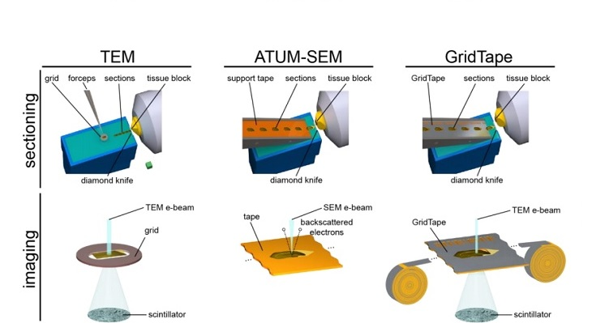
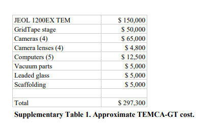
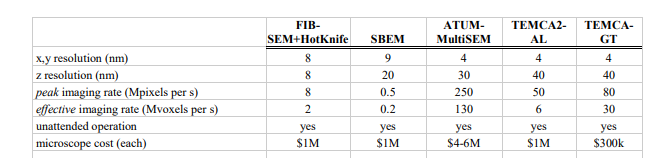

GridTape: cutting the cost of serial section Transmission Electron Microscopy systems

GridTape is part of a new system for serial section transmission electron microscopy imaging which excels at high-throughput low-cost nanometer-scale transmission of large volumes. And it's cheap, for the current price of a comparable multi-beam SEM system, ten grid-tape TEM systems can be built. At first glance the cost sheet looks imposing, but it contains the TEM itself

Cheap here is relative. By using a TEM Camera Array (TEMCA), and the GridTape technology you end up with an almost order of magnitude cheaper data acquisition. While this might be one of the most expensive publications we've covered, it's also perhaps the most effective cost saver.

The GridTape itself is a TEM-compatible tape substrate made from aluminum-coated Kapton tape purchased from Dunmore and slit into reels by Melton. A grid of holes is created in the tape by lasermilling with a reel-to-reel positioning machine and a 1 W ultraviolet laser marking system . After application of LUXFilm to span the holes, the creators of GridTape were able to produce TEM compatible tape, and an automated system allows for the collection of >4000 sections per day.
When combined with a reel-to-reel imaging stage, the tape allows for a system that allows for TEM imaging of >30 Mpixels/s . The complete system is outlined in a paper by Brett Graham, David Hildebrand, Aaron Kuan, Jasper Maniates-Selvin, Logan Thomas, Brendan Shanny, and Wei-Chung Lee .